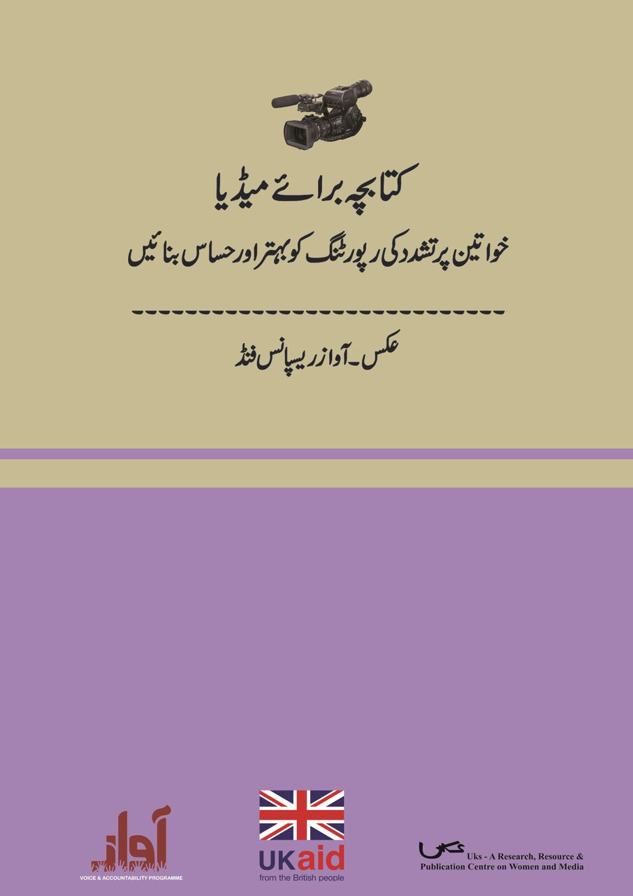

×
Toggle navigation
about us
Projects
Media Monitoring
News & insights
Contact us
Publications
Radio
Trainings
Research Reports
Media Toolkit
Annual Desk Diaries
Media Analysis Reports
Articles
Bochures & Posters
Media Toolkit
Sort by Theme
Dummy
Dummy
Dummy
Dummy
Sort by Year
2010
2011
2012
2013

2016
Booklet for Media Practitioners –Gender-sensitive Reporting on Violence against Women (Urdu)
Download
2013
A Toolkit for a More Gender Responsive Media
Download
2012
CoveringDisasters Through the Lens of Gender
Download
2007
A Gender Sensitive Media Toolkit-Making it Easier to Report on HIV and AIDS
Download English
Download Urdu
2009
Understanding Disability-A Media Guide
Download
2009
Engendering Politics through Media: A Media Manual on Gender Sensitive Reporting on Women and Political in Pakistan
Download
2008
For Equity and Equality. A Best Practices Guide for Raising Women’s voices and Concerns through Radio
Download
2007
Media Resource Book on HIV & AIDS
Download
TERMS OF USE
PRIVACY POLICY
SITEMAP


.jpg)


.jpg)